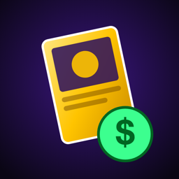
Chase Card Check
Cards, games and consoles from every Top 10 video. Tap to shop on Amazon.
As an Amazon Associate we earn from qualifying purchases. Links on this page are affiliate links: we may earn a commission at no extra cost to you. Card prices are TCGplayer market prices from the date in each video and change daily.
LEGO
All LEGO Pokémon on Amazon →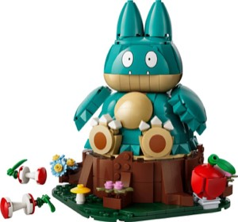
LEGO Pokémon gifts under $70#1 Munchlax · 757 pcsSee all 10 →
- #1 Munchlax 757 pcs
- #2 Eevee and Lapras's Treasure Hunt 623 pcs
- #3 Mewtwo's Lab Break 605 pcs
- #4 Eevee 587 pcs
- #5 Drone Search for Mythical Mew 429 pcs
- #6 Training House with Pikachu 400 pcs
- #7 Trainer's Buggy Adventure with Squirtle 320 pcs
- #8 Sprigatito, Fuecoco and Quaxly Battle 313 pcs
- #9 Berry Bash with Bulbasaur and Bidoof 240 pcs
- #10 Charmander and Geodude's Cavern Clash 198 pcs
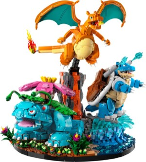
Biggest LEGO Pokémon sets#1 Venusaur, Charizard and Blastoise · 6,838See all 10 →
- #1 Venusaur, Charizard and Blastoise 6,838
- #2 Iconic Trainer Moments Poké Ball 2,386
- #3 Pikachu and Poké Ball 2,050
- #4 Arcanine 1,190
- #5 Rayquaza 1,083
- #6 Up-Scaled Red Minifigure 930
- #7 Umbreon vs. Garchomp Championship Battle 831
- #8 Cubone and Gengar's Spooky Showdown 782
- #9 Munchlax 757
- #10 Charizard vs. Jolteon Ultimate Battle 751
 Most expensive LEGO Pokémon sets#1 Venusaur, Charizard and Blastoise · $649.99See all 10 →
Most expensive LEGO Pokémon sets#1 Venusaur, Charizard and Blastoise · $649.99See all 10 →
- #1 Venusaur, Charizard and Blastoise $649.99
- #2 Iconic Trainer Moments Poké Ball $299.99
- #3 Pikachu and Poké Ball $199.99
- #4 Rayquaza $129.99
- #5 Charizard vs. Jolteon Ultimate Battle $119.99
- #6 Arcanine $109.99
- #7 Cubone and Gengar's Spooky Showdown $89.99
- #8 Up-Scaled Red Minifigure $79.99
- #9 Umbreon vs. Garchomp Championship Battle $79.99
- #10 Munchlax $69.99
Video Games
All video games on Amazon →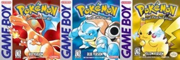
Best-selling Pokémon games#1 Pokémon Red and Blue · 31.38M soldSee all 10 →
- #1 Pokémon Red and Blue 31.38M sold
- #2 Pokémon Scarlet and Violet 28.08M sold
- #3 Pokémon Sword and Shield 27.08M sold
- #4 Pokémon Gold and Silver 23.7M sold
- #5 Pokémon Diamond and Pearl 17.67M sold
- #6 Pokémon X and Y 16.78M sold
- #7 Pokémon Sun and Moon 16.33M sold
- #8 Pokémon Ruby and Sapphire 16.22M sold
- #9 Pokémon FireRed and LeafGreen 16M sold
- #10 Pokémon Black and White 15.64M sold
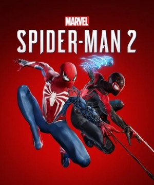
Best-selling PS5 games#1 Marvel's Spider-Man 2 · 17.5M soldSee all 10 →
- #1 Marvel's Spider-Man 2 17.5M sold
- #2 God of War Ragnarök 15.1M sold
- #3 Gran Turismo 7 9.6M sold
- #4 EA Sports FC 26 7.04M sold
- #5 Resident Evil 4 6.968M sold
- #6 Black Myth: Wukong 6M sold
- #7 Helldivers 2 5.6M sold
- #8 Ghost of Yōtei 5.5M sold
- #9 Forza Horizon 5 5.3M sold
- #10 Astro Bot 4.7M sold
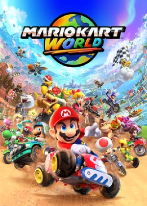
Best-selling Switch 2 games#1 Mario Kart World · 16.48M soldSee all 10 →
- #1 Mario Kart World 16.48M sold
- #2 The Legend of Zelda: Ocarina of Time 5.2M sold
- #3 Pokémon Pokopia 5.18M sold
- #4 Donkey Kong Bananza 5.05M sold
- #5 Pokémon Legends: Z-A – Nintendo Switch 2 Edition 4.04M sold
- #6 Splatoon Raiders 2.42M sold
- #7 Kirby Air Riders 1.94M sold
- #8 Fire Emblem: Fortune's Weave 1.34M sold
- #9 Super Mario Party Jamboree – Nintendo Switch 2 Edition + Jamboree TV 1.28M sold
- #10 Star Fox 1.17M sold
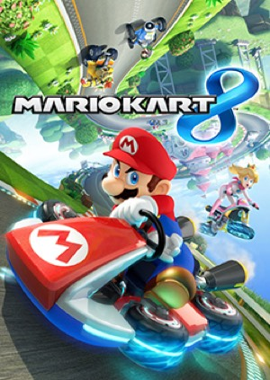
Best-selling Switch games#1 Mario Kart 8 Deluxe · 72M soldSee all 10 →
- #1 Mario Kart 8 Deluxe 72M sold
- #2 Animal Crossing: New Horizons 50.63M sold
- #3 Super Smash Bros. Ultimate 38.5M sold
- #4 The Legend of Zelda: Breath of the Wild 34.28M sold
- #5 Super Mario Odyssey 31.06M sold
- #6 Pokémon Scarlet and Violet 28.66M sold
- #7 Pokémon Sword and Shield 27.36M sold
- #8 The Legend of Zelda: Tears of the Kingdom 22.9M sold
- #9 Super Mario Party 21.39M sold
- #10 New Super Mario Bros. U Deluxe 19.22M sold
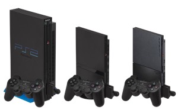
Best-selling consoles ever#1 PlayStation 2 · 160M soldSee all 10 →
- #1 PlayStation 2 160M sold
- #2 Nintendo Switch 157.2M sold
- #3 Nintendo DS 154.02M sold
- #4 Game Boy & Game Boy Color 118.69M sold
- #5 PlayStation 4 117.2M sold
- #6 PlayStation 102.49M sold
- #7 Wii 101.63M sold
- #8 PlayStation 5 100M sold
- #9 PlayStation 3 87.4M sold
- #10 Xbox 360 84M sold
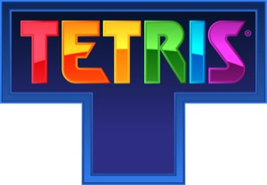
Best-selling games ever#1 Tetris · 520M soldSee all 10 →
- #1 Tetris 520M sold
- #2 Minecraft 425M sold
- #3 Grand Theft Auto V 235M sold
- #4 Red Dead Redemption 2 89M sold
- #5 Wii Sports 82.9M sold
- #6 Mario Kart 8 / Deluxe 80.46M sold
- #7 PUBG: Battlegrounds 75M sold
- #8 Terraria 70M sold
- #9 The Elder Scrolls V: Skyrim 65M sold
- #10 The Witcher 3: Wild Hunt 65M sold
 Best-selling PS4 games#1 Grand Theft Auto V · 29.52M soldSee all 10 →
Best-selling PS4 games#1 Grand Theft Auto V · 29.52M soldSee all 10 →
- #1 Grand Theft Auto V 29.52M sold
- #2 Marvel's Spider-Man 22.68M sold
- #3 God of War 21.02M sold
- #4 Horizon Zero Dawn 19.29M sold
- #5 Uncharted 4: A Thief's End 18.65M sold
- #6 The Last of Us Remastered 18.63M sold
- #7 Minecraft: PlayStation 4 Edition 17M sold
- #8 Call of Duty: Black Ops III 15M sold
- #9 Call of Duty: WWII 13.4M sold
- #10 Gran Turismo Sport 12.97M sold
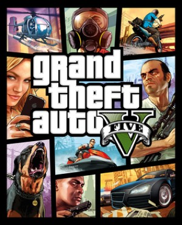
Best-selling Xbox One games#1 Grand Theft Auto V · 10.98M soldSee all 10 →
- #1 Grand Theft Auto V 10.98M sold
- #2 Forza Horizon 4 10M sold
- #3 PUBG: Battlegrounds 9M sold
- #4 Call of Duty: Black Ops III 7.37M sold
- #5 Call of Duty: WWII 6.23M sold
- #6 Call of Duty: Advanced Warfare 5.22M sold
- #7 Halo 5: Guardians 5M sold
- #8 Call of Duty: Infinite Warfare 4.79M sold
- #9 The Witcher 3: Wild Hunt 4.3M sold
- #10 Dead Rising 3 4.1M sold
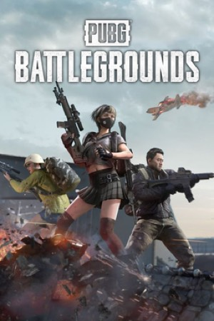
Best-selling PC games#1 PUBG: Battlegrounds · 41M soldSee all 10 →
- #1 PUBG: Battlegrounds 41M sold
- #2 Minecraft 33M sold
- #3 Terraria 32M sold
- #4 Stardew Valley 26M sold
- #5 Garry's Mod 25.4M sold
- #6 Euro Truck Simulator 2 22M sold
- #7 Phasmophobia 21M sold
- #8 Diablo III 20M sold
- #9 Meccha Chameleon 20M sold
- #10 Rust 20M sold
Best-selling game franchises#1 Mario · 907.7M soldSee all 10 →
- #1 Mario 907.7M sold
- #2 Tetris 520M sold
- #3 Pokémon 515M sold
- #4 Call of Duty 500M sold
- #5 Grand Theft Auto 480M sold
- #6 Minecraft 425M sold
- #7 FIFA 325M sold
- #8 Assassin's Creed 250M sold
- #9 Resident Evil 218M sold
- #10 Final Fantasy 215M sold
 Best-selling Nintendo games#1 Wii Sports · 82.9M soldSee all 10 →
Best-selling Nintendo games#1 Wii Sports · 82.9M soldSee all 10 →
- #1 Wii Sports 82.9M sold
- #2 Mario Kart 8 Deluxe 72M sold
- #3 Animal Crossing: New Horizons 50.63M sold
- #4 Super Mario Bros. 40.24M sold
- #5 Super Smash Bros. Ultimate 38.5M sold
- #6 Mario Kart Wii 37.38M sold
- #7 The Legend of Zelda: Breath of the Wild 34.28M sold
- #8 Wii Sports Resort 33.14M sold
- #9 Pokémon Red/Green/Blue 31.4M sold
- #10 Super Mario Odyssey 31.06M sold
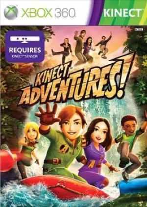
Best-selling Xbox 360 games#1 Kinect Adventures! · 24M soldSee all 10 →
- #1 Kinect Adventures! 24M sold
- #2 Grand Theft Auto V 22.95M sold
- #3 Minecraft: Xbox 360 Edition 22M sold
- #4 Call of Duty: Modern Warfare 3 14.72M sold
- #5 Call of Duty: Black Ops 14.55M sold
- #6 Halo 3 14.5M sold
- #7 Call of Duty: Black Ops II 13.8M sold
- #8 The Elder Scrolls V: Skyrim 13.7M sold
- #9 Call of Duty: Modern Warfare 2 13.5M sold
- #10 Red Dead Redemption 13.5M sold
 Best-selling PS3 games#1 Grand Theft Auto V · 24.66M soldSee all 10 →
Best-selling PS3 games#1 Grand Theft Auto V · 24.66M soldSee all 10 →
- #1 Grand Theft Auto V 24.66M sold
- #2 Gran Turismo 5 11.95M sold
- #3 Grand Theft Auto IV 11M sold
- #4 The Last of Us 10M sold
- #5 Uncharted 3: Drake's Deception 9M sold
- #6 Uncharted 2: Among Thieves 7.3M sold
- #7 Metal Gear Solid 4: Guns of the Patriots 7M sold
- #8 Batman: Arkham City 5.48M sold
- #9 Gran Turismo 5 Prologue 5.35M sold
- #10 Gran Turismo 6 5.22M sold
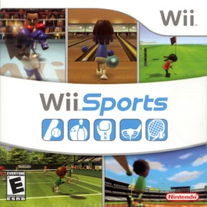
Best-selling Wii games#1 Wii Sports · 82.9M soldSee all 10 →
- #1 Wii Sports 82.9M sold
- #2 Mario Kart Wii 37.38M sold
- #3 Wii Sports Resort 33.14M sold
- #4 New Super Mario Bros. Wii 30.32M sold
- #5 Wii Play 28.02M sold
- #6 Wii Fit 22.67M sold
- #7 Wii Fit Plus 21.13M sold
- #8 Super Smash Bros. Brawl 13.32M sold
- #9 Super Mario Galaxy 12.8M sold
- #10 Just Dance 3 9.92M sold
 Best-selling Wii U games#1 Mario Kart 8 · 8.46M soldSee all 10 →
Best-selling Wii U games#1 Mario Kart 8 · 8.46M soldSee all 10 →
- #1 Mario Kart 8 8.46M sold
- #2 Super Mario 3D World 5.89M sold
- #3 New Super Mario Bros. U 5.82M sold
- #4 Super Smash Bros. for Wii U 5.38M sold
- #5 Nintendo Land 5.21M sold
- #6 Splatoon 4.95M sold
- #7 Super Mario Maker 4.02M sold
- #8 New Super Luigi U 3.07M sold
- #9 The Legend of Zelda: The Wind Waker HD 2.37M sold
- #10 Mario Party 10 2.27M sold
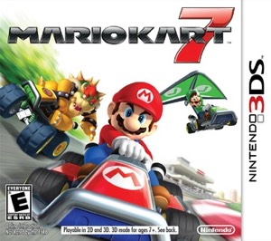
Best-selling 3DS games#1 Mario Kart 7 · 18.99M soldSee all 10 →
- #1 Mario Kart 7 18.99M sold
- #2 Pokémon X and Y 16.8M sold
- #3 Pokémon Sun and Moon 16.34M sold
- #4 Pokémon Omega Ruby and Alpha Sapphire 14.68M sold
- #5 New Super Mario Bros. 2 13.42M sold
- #6 Animal Crossing: New Leaf 13.07M sold
- #7 Super Mario 3D Land 12.89M sold
- #8 Super Smash Bros. for Nintendo 3DS 9.65M sold
- #9 Pokémon Ultra Sun and Ultra Moon 9.26M sold
- #10 Yo-kai Watch 2 7.3M sold
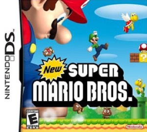
Best-selling Nintendo DS games#1 New Super Mario Bros. · 30.8M soldSee all 10 →
- #1 New Super Mario Bros. 30.8M sold
- #2 Nintendogs (all versions) 23.96M sold
- #3 Mario Kart DS 23.6M sold
- #4 Brain Age: Train Your Brain in Minutes a Day! 19.01M sold
- #5 Pokémon Diamond and Pearl 17.67M sold
- #6 Pokémon Black and White 15.64M sold
- #7 Brain Age 2: More Training in Minutes a Day! 14.88M sold
- #8 Pokémon HeartGold and SoulSilver 12.72M sold
- #9 Animal Crossing: Wild World 11.75M sold
- #10 Super Mario 64 DS 11.06M sold
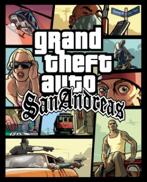
Best-selling PS2 games#1 Grand Theft Auto: San Andreas · 17.33M soldSee all 10 →
- #1 Grand Theft Auto: San Andreas 17.33M sold
- #2 Gran Turismo 3: A-Spec 14.89M sold
- #3 Grand Theft Auto: Vice City 14.2M sold
- #4 Gran Turismo 4 11.76M sold
- #5 Grand Theft Auto III 11.6M sold
- #6 Tekken 5 9.43M sold
- #7 Final Fantasy X 8.6M sold
- #8 Metal Gear Solid 2: Sons of Liberty 7.03M sold
- #9 Final Fantasy XII 6.4M sold
- #10 Kingdom Hearts 6.3M sold
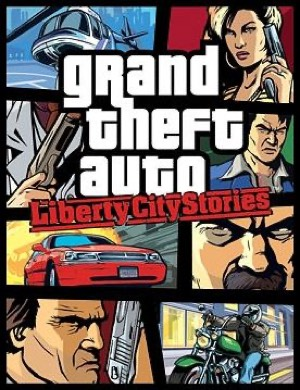
Best-selling PSP games#1 Grand Theft Auto: Liberty City Stories · 7.5M soldSee all 10 →
- #1 Grand Theft Auto: Liberty City Stories 7.5M sold
- #2 Monster Hunter Portable 3rd 4.9M sold
- #3 Gran Turismo 4.67M sold
- #4 Ratchet & Clank: Size Matters 4.4M sold
- #5 Monster Hunter Freedom Unite 3.8M sold
- #6 God of War: Chains of Olympus 3.2M sold
- #7 Crisis Core: Final Fantasy VII 3.1M sold
- #8 Monster Hunter Freedom 2 2.4M sold
- #9 Daxter 2.3M sold
- #10 Tekken: Dark Resurrection 2.2M sold
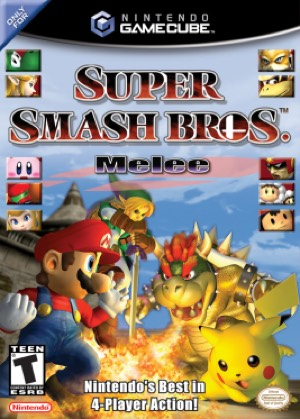
Best-selling GameCube games#1 Super Smash Bros. Melee · 7.41M soldSee all 10 →
- #1 Super Smash Bros. Melee 7.41M sold
- #2 Mario Kart: Double Dash 6.88M sold
- #3 Super Mario Sunshine 5.91M sold
- #4 The Legend of Zelda: The Wind Waker 4.43M sold
- #5 Luigi's Mansion 3.33M sold
- #6 Metroid Prime 2.84M sold
- #7 Animal Crossing 2.7M sold
- #8 Mario Party 4 2.46M sold
- #9 Pokémon Colosseum 2.41M sold
- #10 Mario Party 5 2.17M sold
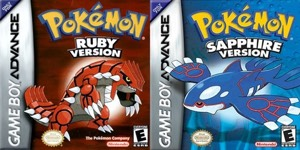
Best-selling Game Boy Advance games#1 Pokémon Ruby and Sapphire · 16.22M soldSee all 10 →
- #1 Pokémon Ruby and Sapphire 16.22M sold
- #2 Pokémon FireRed and LeafGreen 12M sold
- #3 Pokémon Emerald 6.8M sold
- #4 Mario Kart: Super Circuit 5.91M sold
- #5 Super Mario World: Super Mario Advance 2 5.69M sold
- #6 Super Mario Advance 5.57M sold
- #7 Super Mario Advance 4: Super Mario Bros. 3 5.43M sold
- #8 Namco Museum 2.96M sold
- #9 Pac-Man Collection 2.94M sold
- #10 Yoshi's Island: Super Mario Advance 3 2.83M sold
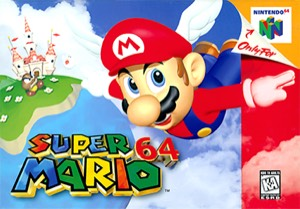
Best-selling Nintendo 64 games#1 Super Mario 64 · 11.91M soldSee all 10 →
- #1 Super Mario 64 11.91M sold
- #2 Mario Kart 64 9.87M sold
- #3 GoldenEye 007 8.09M sold
- #4 The Legend of Zelda: Ocarina of Time 7.6M sold
- #5 Super Smash Bros. 5.55M sold
- #6 Pokémon Stadium 5.46M sold
- #7 Donkey Kong 64 5.27M sold
- #8 Diddy Kong Racing 4.88M sold
- #9 Star Fox 64 4M sold
- #10 Banjo-Kazooie 3.65M sold
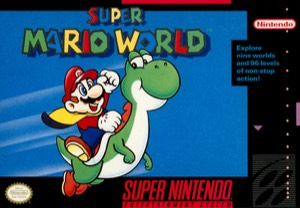
Best-selling SNES games#1 Super Mario World · 20.61M soldSee all 10 →
- #1 Super Mario World 20.61M sold
- #2 Super Mario All-Stars 10.55M sold
- #3 Donkey Kong Country 9.3M sold
- #4 Super Mario Kart 8.76M sold
- #5 Street Fighter II: The World Warrior 6.3M sold
- #6 Donkey Kong Country 2: Diddy's Kong Quest 5.15M sold
- #7 The Legend of Zelda: A Link to the Past 4.61M sold
- #8 Super Mario World 2: Yoshi's Island 4.12M sold
- #9 Street Fighter II Turbo 4.1M sold
- #10 Star Fox 4M sold
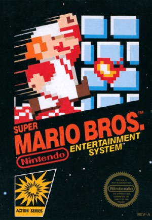
Best-selling NES games#1 Super Mario Bros. · 40.24M soldSee all 10 →
- #1 Super Mario Bros. 40.24M sold
- #2 Duck Hunt 28.31M sold
- #3 Super Mario Bros. 3 18M sold
- #4 Tetris 8M sold
- #5 Super Mario Bros. 2 (international version) 7.46M sold
- #6 The Legend of Zelda 6.51M sold
- #7 Dr. Mario 4.85M sold
- #8 Zelda II: The Adventure of Link 4.38M sold
- #9 Excitebike 4.16M sold
- #10 Golf 4.01M sold
 Best-selling Game Boy games#1 Pokémon Generation I · 45.9M soldSee all 10 →
Best-selling Game Boy games#1 Pokémon Generation I · 45.9M soldSee all 10 →
- #1 Pokémon Generation I 45.9M sold
- #2 Tetris 35M sold
- #3 Pokémon Red, Green and Blue 31.3M sold
- #4 Pokémon Generation II 30M sold
- #5 Pokémon Gold and Silver 23.7M sold
- #6 Super Mario Land 18.14M sold
- #7 Pokémon Yellow 14.6M sold
- #8 Super Mario Land 2: 6 Golden Coins 11.18M sold
- #9 Pokémon Crystal 6.3M sold
- #10 Dr. Mario 5.34M sold
Pokémon TCG
All Pokémon TCG packs on Amazon →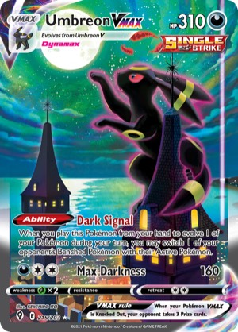
Best Pokémon sets to open#1 Evolving Skies · $6,421See all 10 →
- #1 Evolving Skies $6,421
- #2 Prismatic Evolutions $3,121
- #3 Ascended Heroes $2,482
- #4 Black Bolt $1,872
- #5 Paldean Fates $1,532
- #6 White Flare $1,517
- #7 Lost Origin $1,466
- #8 Crown Zenith $1,285
- #9 Mega Evolution $972
- #10 151 $909
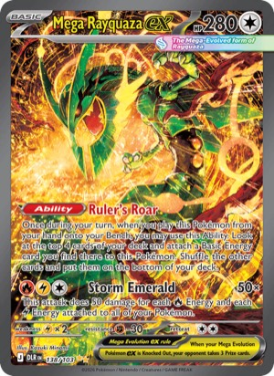
Delta Reign#1 Mega Rayquaza ex · $293Shop packs →

Pitch Black#1 Mega Darkrai ex · $132Shop packs →
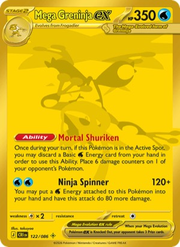
Chaos Rising#1 Mega Greninja ex · $109Shop packs →
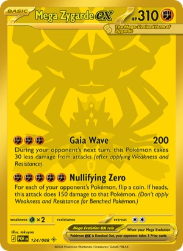
Perfect Order#1 Mega Zygarde ex · $82Shop packs →

Ascended Heroes#1 Mega Gengar ex · $579Shop packs →

Phantasmal Flames#1 Mega Charizard X ex · $548Shop packs →

Mega Evolution#1 Mega Lucario ex · $192Shop packs →
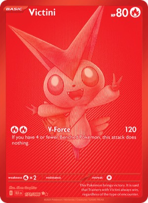
Black Bolt#1 Victini · $605Shop packs →
White Flare#1 Victini · $528Shop packs →
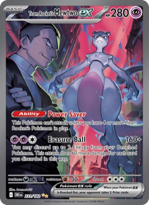
Destined Rivals#1 Team Rocket's Mewtwo ex · $284Shop packs →

Journey Together#1 Lillie's Clefairy ex · $74Shop packs →

Prismatic Evolutions#1 Umbreon ex · $1,187Shop packs →
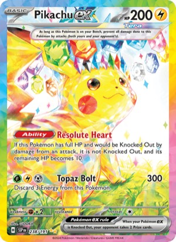
Surging Sparks#1 Pikachu ex · $227Shop packs →

Stellar Crown#1 Squirtle · $85Shop packs →

Shrouded Fable#1 Persian · $65Shop packs →
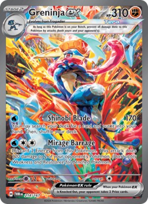
Twilight Masquerade#1 Greninja ex · $230Shop packs →
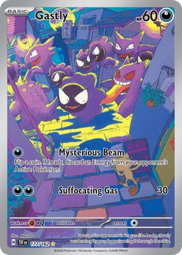
Temporal Forces#1 Gastly · $92Shop packs →

Paldean Fates#1 Mew ex · $814Shop packs →

151#1 Charizard ex · $291Shop packs →

Obsidian Flames#1 Charizard ex · $85Shop packs →
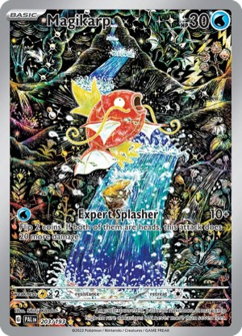
Paldea Evolved#1 Magikarp · $347Shop packs →
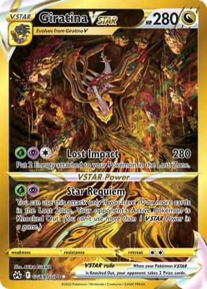
Crown Zenith#1 Giratina VSTAR · $290Shop packs →
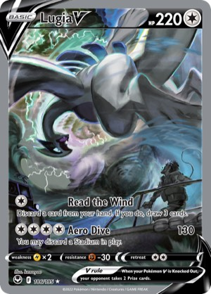
Silver Tempest#1 Lugia V · $488Shop packs →
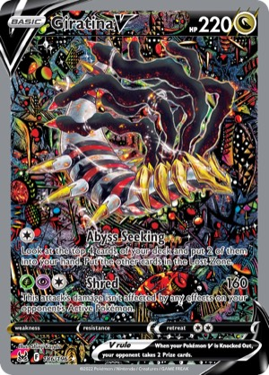
Lost Origin#1 Giratina V · $851Shop packs →
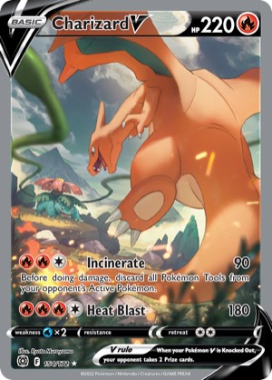
Brilliant Stars#1 Charizard V · $276Shop packs →

Evolving Skies#1 Umbreon VMAX · $2,265Shop packs →
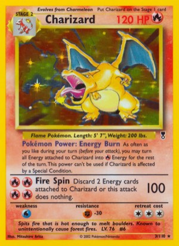
Most Expensive Charizard#1 Charizard · $6,999Shop packs →
Magic: The Gathering
All Magic: The Gathering packs on Amazon → Best Magic sets to open#1 The Hobbit · $25,818See all 10 →
Best Magic sets to open#1 The Hobbit · $25,818See all 10 →
- #1 The Hobbit $25,818
- #2 Final Fantasy $9,776
- #3 Teenage Mutant Ninja Turtles $8,774
- #4 Avatar: The Last Airbender $7,615
- #5 Reality Fracture $6,178
- #6 Foundations $4,549
- #7 Marvel's Spider-Man $4,131
- #8 Bloomburrow $3,143
- #9 Edge of Eternities $3,127
- #10 Secrets of Strixhaven $3,035

Star Trek#1 Captain Jean-Luc Picard · $261Shop packs →

Reality Fracture#1 Bloodline Recollector · $3,100Shop packs →
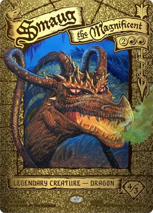
The Hobbit#1 Smaug the Magnificent · $24,500Shop packs →

Marvel Super Heroes#1 The Mind Stone · $1,612Shop packs →
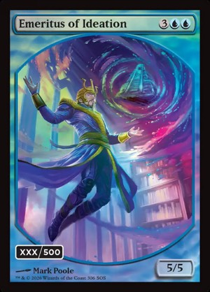
Secrets of Strixhaven#1 Emeritus of Ideation · $2,900Shop packs →

Teenage Mutant Ninja Turtles#1 Leonardo, Sewer Samurai · $2,987Shop packs →
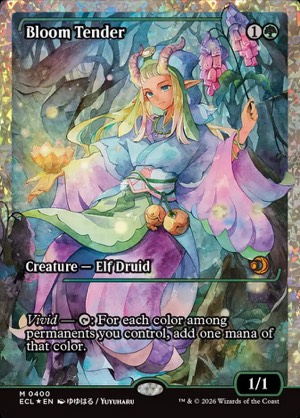
Lorwyn Eclipsed#1 Bloom Tender · $486Shop packs →

Avatar: The Last Airbender#1 Avatar Aang · $4,549Shop packs →

Marvel's Spider-Man#1 The Soul Stone · $1,851Shop packs →

Edge of Eternities#1 Sothera, the Supervoid · $1,492Shop packs →

Final Fantasy#1 Traveling Chocobo · $1,987Shop packs →
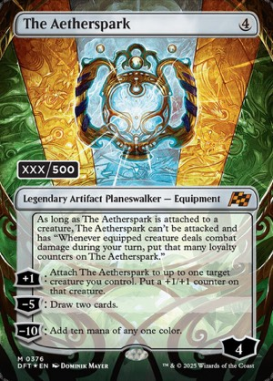
Aetherdrift#1 The Aetherspark · $1,875Shop packs →
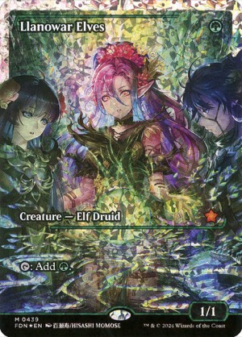
Foundations#1 Llanowar Elves · $1,084Shop packs →
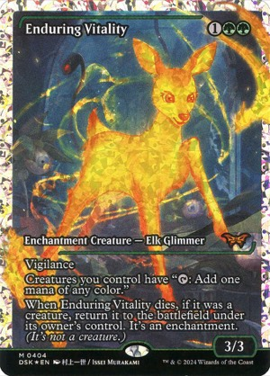
Duskmourn: House of Horror#1 Enduring Vitality · $373Shop packs →
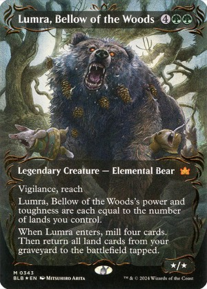
Bloomburrow#1 Lumra, Bellow of the Woods · $916Shop packs →
One Piece Card Game
All One Piece Card Game packs on Amazon →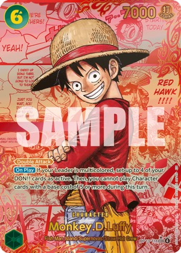
Best One Piece sets to open#1 Carrying On His Will · $22,923See all 10 →
- #1 Carrying On His Will $22,923
- #2 A Fist of Divine Speed $21,053
- #3 Emperors in the New World $16,468
- #4 Extra Booster: Anime 25th Collection $8,298
- #5 Extra Booster: One Piece Heroines Edition Vol. 2 $5,778
- #6 The Azure Sea's Seven $5,035
- #7 Legacy of the Master $4,401
- #8 The Time of Battle $3,951
- #9 Adventure on Kami's Island $3,464
- #10 Kingdoms of Intrigue $2,469

Extra Booster: Anime 25th Collection (EB-02)#1 Monkey.D.Luffy · $5,108Shop packs →

Extra Booster: One Piece Heroines Edition Vol. 2 (EB-05)#1 Nami · $1,554Shop packs →
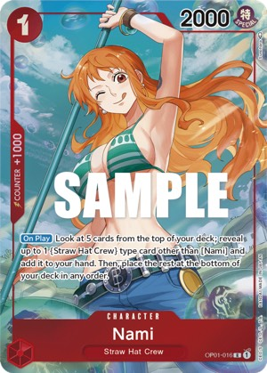
Romance Dawn (OP-01)#1 Nami · $461Shop packs →
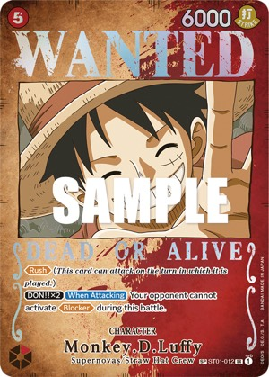
Pillars of Strength (OP-03)#1 Monkey.D.Luffy · $373Shop packs →
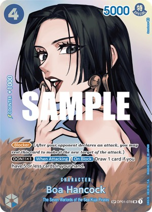
Kingdoms of Intrigue (OP-04)#1 Boa Hancock · $1,054Shop packs →
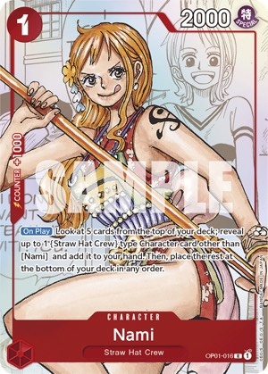
Awakening of the New Era (OP-05)#1 Nami · $472Shop packs →
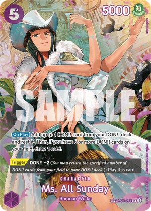
Wings of the Captain (OP-06)#1 Ms. All Sunday · $226Shop packs →
Two Legends (OP-08)#1 Silvers Rayleigh · $504Shop packs →

Emperors in the New World (OP-09)#1 Gol.D.Roger · $5,500Shop packs →
Royal Blood (OP-10)#1 Trafalgar Law · $676Shop packs →
A Fist of Divine Speed (OP-11)#1 Monkey.D.Luffy · $13,000Shop packs →
Legacy of the Master (OP-12)#1 Marshall.D.Teach · $1,919Shop packs →

Carrying On His Will (OP-13)#1 Monkey.D.Luffy · $7,500Shop packs →
The Azure Sea's Seven (OP-14)#1 Buggy · $1,483Shop packs →
Adventure on Kami's Island (OP-15)#1 Enel · $856Shop packs →
The Time of Battle (OP-16)#1 Sakazuki · $1,073Shop packs →